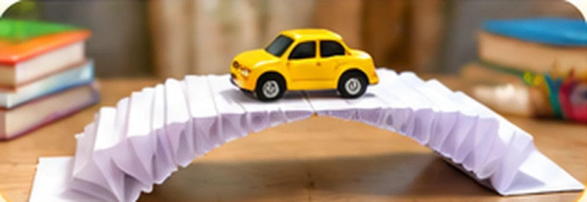

🌉 Паперовий міст через струмок
Маленька історія — новий інструмент винахідника!
🎯 Ситуація

Маленькі винахідники будують міст для іграшкової машинки. На столі лежить звичайний аркуш паперу. Він тонкий і гнеться, але його можна складати та згортати.
❓ Ваше завдання
Дослідіть властивості паперу. Що зміниться, якщо надати йому іншої форми?
🧩 Винахідницький тренажер
Оберіть два способи роботи з папером. Передбачте, який міст стане міцнішим. Перетягніть картки або натисніть на них.
🧺 Ваші ідеї: ще немає
🧪 Маленький дослід
Покладіть аркуш між двома книжками. Спробуйте плаский і складений папір. Який витримає більше ґудзиків?
Використовуйте лише легкі предмети та стійкі опори.
✏️ Ваш винахід
Опишіть: «Папір був…, а після згинання став…».